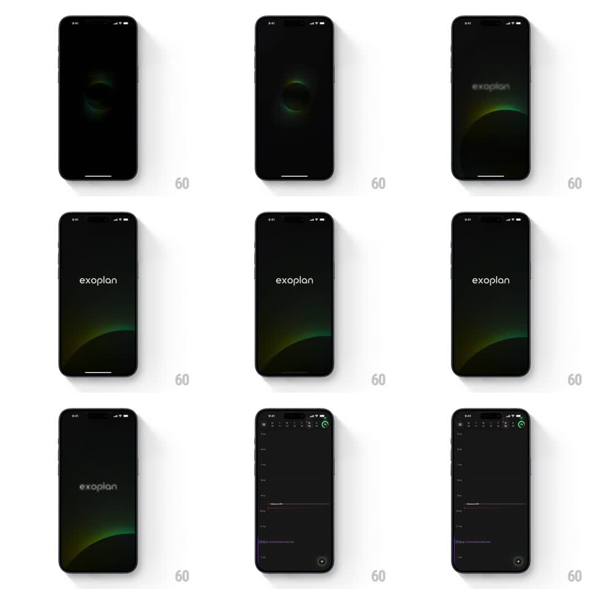

Media
Frame-by-frame

Rebuild this animation 1:1: Exoplan's launch transition - a glowing organic aurora circle on the black splash screen sinks and morphs into the calendar's green "+" floating action button while the "exoplan" wordmark fades and the schedule slides into place.

Rebuild this animation 1:1: Exoplan's launch transition - a glowing organic aurora circle on the black splash screen sinks and morphs into the calendar's green "+" floating action button while the "exoplan" wordmark fades and the schedule slides into place. ## Integration Integration: stack-agnostic spec - springs given as stiffness/damping, timed motions as duration + curve; map every value to your framework and animation library of choice. ## Scene Splash: black screen with a soft organic glow (green-to-amber aurora blob) breathing at center; the lowercase "exoplan" wordmark fades in over it. Destination: a dark calendar day view - date strip across the top, hour timeline with a red now-line and event blocks, and a circular green "+" FAB at bottom-right. ## Motion spec Pattern: shared-element morph from splash glow to FAB, ~1.2s. - Breath: the aurora blob slowly scales (1 -> 1.08 -> 1, 2s) while the wordmark fades in (400ms). - Sink: the wordmark fades out (250ms) as the glow slides down toward the bottom-right corner, shrinking and sharpening into the FAB disc (500ms, ease-in-out); the aurora hues condense into the button's green. - UI arrival: the date strip and timeline fade/slide in from the top (300ms, ease-out) as the glow travels; the "+" glyph draws inside the landed disc (200ms). - Settle: FAB does one soft press-scale (1 -> 0.94 -> 1, 200ms) to signal it is tappable. ## Calibration - The glow must remain visibly the same object through the morph - no fade-out/fade-in swap. - Keep the splash fully black except the glow and wordmark. ## Reduced motion Splash cross-fades to the calendar (300ms); FAB fades in place. ## Don't miss - The wordmark is lowercase and light-weight. - The red now-line and muted event blocks appear only after the transition, not during.